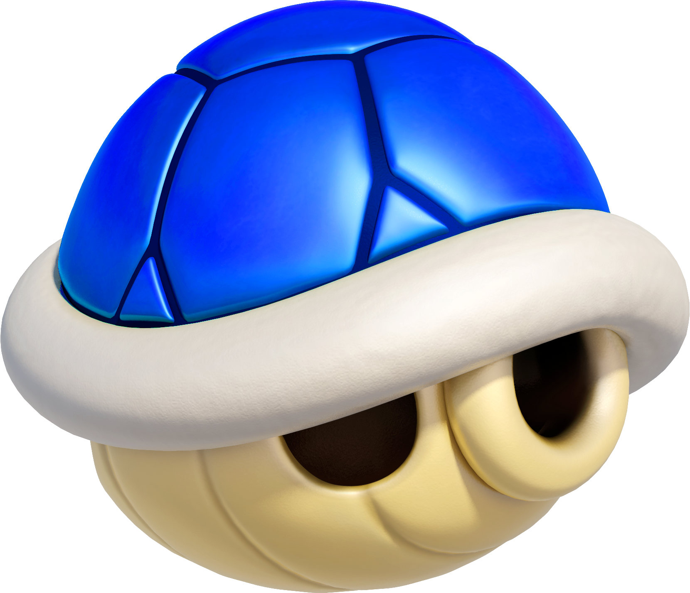
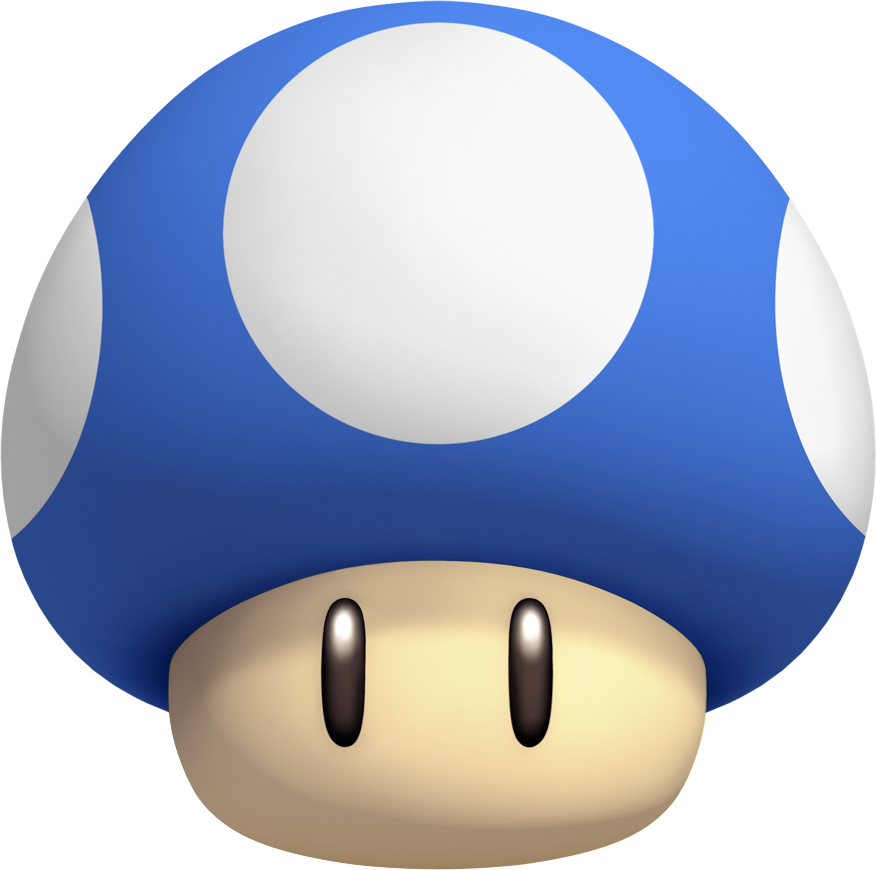
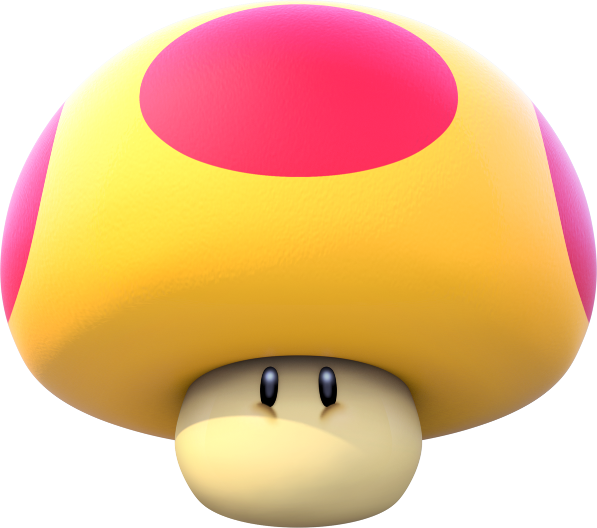
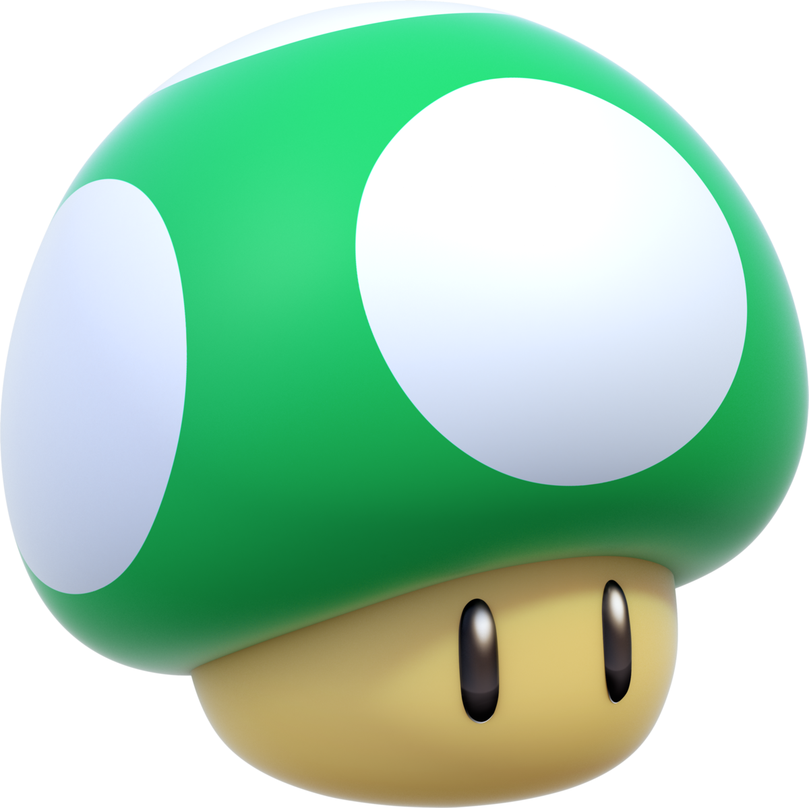
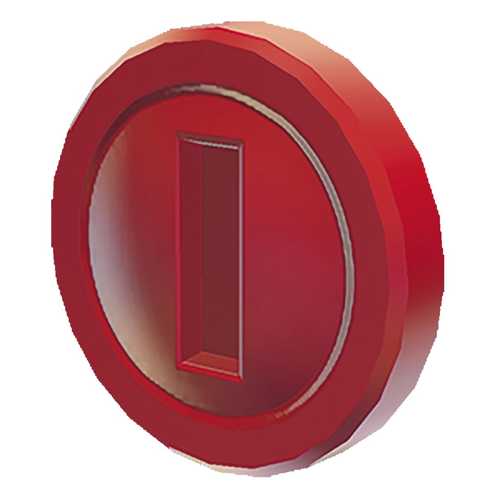
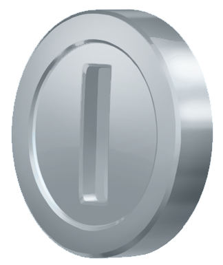

Every Collectible Item in New Super Mario Bros DS!
Power Ups
Super Mushroom

This Mushroom may be simple, but it's very important! Not only does it allow you to get bigger, take 2 hits, and break Brick Blocks, it will also allow you to get even better power ups!
Fire Flower

This handy flower will allow to not only take 3 hits, but you can also throw fireballs at your emenies! A handy offensive power up.
Super Star

This Item is one of the most powerful! You will be able to run right through your Emenies and not even have a scratch! Anyone or thing hit while you are in this state is instantly defeated!
Blue Shell

Not to be confused with the Mario kart edition, This one, you can wear! A bit of a rare power-up, when you sprint, you'll enter your shell and go through brick blocks and emenies! Just, Watch out for bottomless pits.
Mini Mushroom

This mushroom may make you smaller, but there are some benefits. You can run on water, bounce off of emenies, and fit into any pipe! (even tiny ones!)
Mega Mushroom

This Item makes you HUGE! You can crush and run through ANYTHING!!! It's not permenant, however, so make use of it as fast as you can!
1-UP Mushroom

This Mushroom is very rare, and anyone can see why. Just grabbing one will grant you an extra life!
Coins
Yellow Coin

This kind of coin can be found everywhere! Collect 100 of them for a 1-up!
Red Coin

These coins only appear when a red ring is ran through. Collect all 8 for a extra power-up or a 1-up!
Silver Coin

These coins only appear when a P-switch is pressed. There's a ton of them too, but you better be quick to grab them, or otherwise, they'll disapear when time runs out!
Star Coin

There's only 3 per course, but you'll want to collect them if you want to access the entire game. The reason being is some paths are blocked by a toll gate, requiring 5 Star Coins Each. Be warned, however, as it will require eithe a certain item, or skills to get your hands on these.